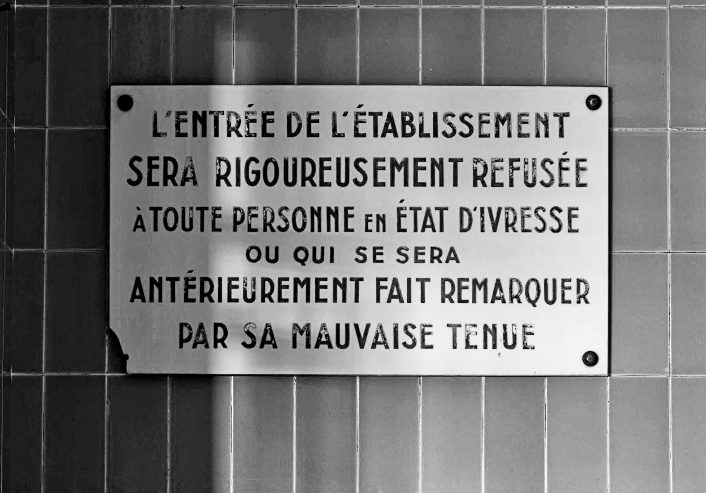
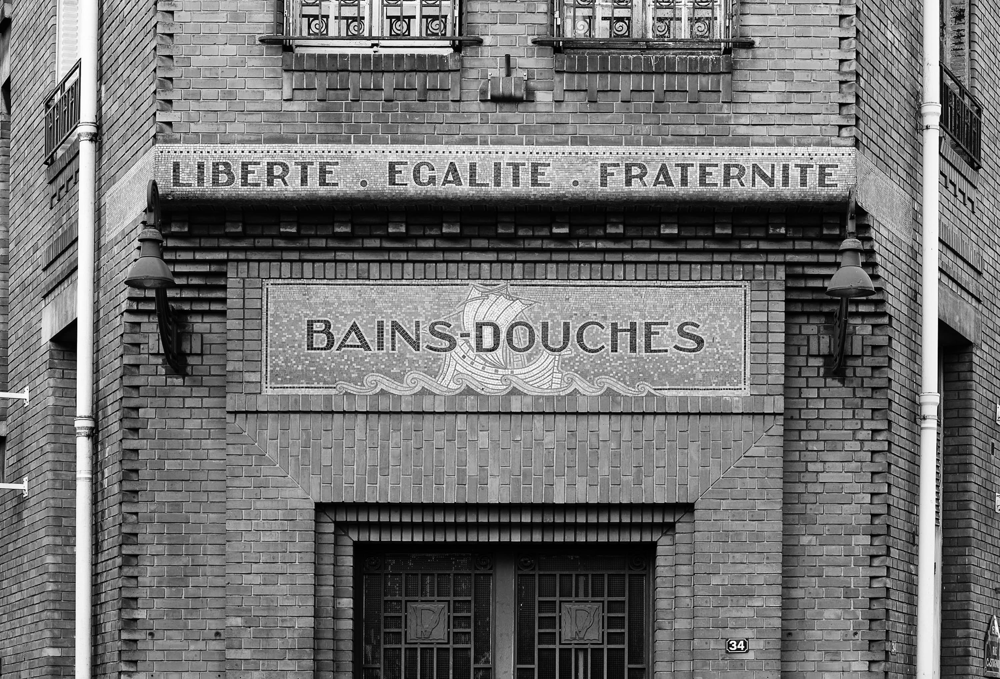
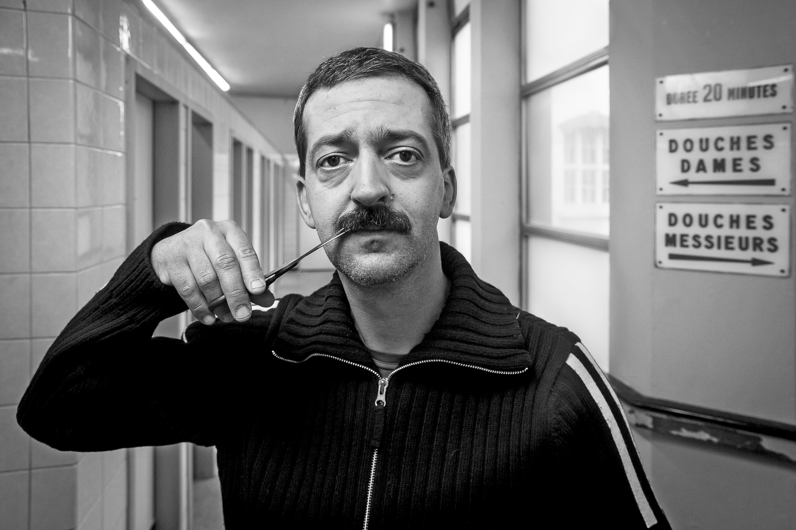

Entre le milieu du XIXe siècle et le début du XXe siècle, un courant à la fois idéologique, politique, pratique et scientifique joue un rôle majeur au sein de la société française : l’hygiénisme. Il transforme peu à peu les relations que les personnes entretiennent avec leur corps et leur environnement immédiat, ce dont rend compte l’histoire du bain et des établissements publics parisiens.
Avant la généralisation des salles de bain dans les logements privés, il est courant de fréquenter les bains publics. Entre 1900 et 1930, ces derniers se multiplient dans la capitale, principalement dans l’est et le nord de la ville où les logements sont généralement moins luxueux. Les bains-douches de la Butte-aux-Cailles, dans le XIIIe arrondissement, sont construits en 1908, et leur histoire est étroitement liée à celle du puits artésien voisin qui les fournit en eau chaude.
La construction de ces établissements est conçue comme une pratique de santé publique, en lien avec l’émergence de nouvelles connaissances. Au cours du XIXe siècle, les savoirs autour de l’eau se transforment rapidement. Les discussions scientifiques ne concernent pas seulement la fréquence des bains, mais aussi la température à laquelle ils sont pris. La préoccupation n’est d’ailleurs pas nouvelle : les Romains de l’Antiquité se baignaient successivement dans des bassins de températures différentes, chacun étant censé apporter un bienfait particulier au corps.
Au XVIIIe siècle en Europe, comme l’ont montré les historiens Alain Corbin et Georges Vigarello, on pense que la température de l’eau a un effet direct sur celle du corps. On prend des bains dans l’objectif de fortifier ou d’apaiser le corps bien davantage que de le laver : les bains d’eau froide, vus comme plus tonifiants, sont privilégiés. À la fin du XVIIIe siècle, des médecins hygiénistes s’opposent même pendant un temps à la diffusion du bain chaud, accusé d’affaiblir les fibres du corps.
Au cours des années 1820, la théorie de la respiration de la peau joue un rôle majeur dans l’évolution des connaissances. Aujourd’hui réfutée, elle stipule que la peau contribuerait au rejet de gaz carbonique par le corps. Le médecin hygiéniste William Frédéric Edwards participe largement à diffuser cette idée en menant l’expérience suivante : il place des grenouilles dans des sacs hermétiques et ne laisse sortir que leur tête. Au bout de quelques minutes, les sacs se chargent de gaz carbonique. Edwards y voit la preuve que ce gaz est rejeté par la peau des grenouilles et affirme qu’il en va ainsi des humains.
Ces nouvelles connaissances médicales modifient la hiérarchie entre bains chauds et froids. Désormais, l’eau chaude, qui détend les pores, est considérée comme plus saine car favorisant les échanges gazeux. À l’inverse, les bains d’eau froide sont réservés à la seule fonction de tonification temporaire et deviennent beaucoup moins fréquents.
Ces revirements illustrent bien ce que Bruno Latour décrit dans Pasteur : guerre et paix des microbes. Il y souligne que l’hygiénisme au XIXe siècle n’est nullement la croyance en un socle de connaissances délimitées et stables. Au contraire, il est une somme, parfois erratique, d’expérimentations, de pratiques et de conseils :
La rhétorique des hygiénistes […] n’est marquée par aucun grand fleuve, aucun argument central. Elle est faite d’une accumulation de conseils, de précautions, de recettes, d’avis, de statistiques, de remèdes, de règlements, d’anecdotes, d’études de cas. Justement c’est une accumulation. Un hygiéniste […] ajoute sans jamais retrancher quoi que ce soitBruno Latour, Pasteur : guerre et paix des microbes, suivi de Irréductions, Paris, La Découverte, 2001, p. 38..
Cette tendance à l’accumulation peut expliquer que la réfutation d’une expérience scientifique ne suffise pas à remettre en cause des pratiques une fois qu’elles ont été diffusées. Au XXe siècle, quand la théorie de la respiration cutanée est finalement réfutée, les habitudes des Français·es en matière d’hygiène ont déjà changé et l’eau chaude a largement été adoptée. Les connaissances médicales, même contredites ultérieurement, participent aux évolutions des pratiques quotidiennes, qui façonnent à leur tour les espaces urbains, comme l’atteste la multiplication des établissements de bain.
Nombre de bains-douches parisiens ferment durant la seconde moitié du XXe siècle. Mais ceux de la Butte-aux-Cailles, des quartiers d’Oberkampf, des Amiraux ou encore de la Bidassoa sont toujours en activité. La mairie de Paris a d’ailleurs décidé, en 2000, de rendre leur accès gratuit. Davantage que d’une politique de santé, leur maintien relève aujourd’hui d’une politique sociale à destination des personnes mal logées.
Pamela Schwartz
Bibliographie
CORBIN Alain (dir.), Histoire du corps (vol. 2), Paris, Seuil, 2005.
LATOUR Bruno, Pasteur : guerre et paix des microbes, suivi de Irréductions, Paris, La Découverte, 2001 [1re éd. 1984].
LÉVY-VROELANT Claire, BONY Lucie et FESDJIAN Sophie, Les Bains-douches de Paris : une enquête sur les lieux et leurs usages, Paris, Ined, 2019.
VIGARELLO Georges, Histoire des pratiques de santé. Le sain et le malsain depuis le Moyen Âge, Paris, Seuil, 1999.
VIGARELLO Georges, Le Propre et le sale. L’hygiène du corps depuis le Moyen Âge, Paris, Seuil, 2014.

Plaque d’interdictions. Photo : Laurent Kruszyk, Région Île-de-France.
Façade des bains-douches de la rue Petitot dans le XIXe arrondissement de Paris. Photo : Laurent Kruszyk, Région Île-de-France.

Façade des anciens bains-douches de la rue Castagnary dans le XVe arrondissement de Paris. Photo : Laurent Kruszyk, Région Île-de-France.

Portrait de Costel, bains-douches de la rue Blomet, dans le XVe arrondissement de Paris (2016). Photo : Florence Levillain, Signatures.
Portrait de Claire et Denis, bains-douches de la rue Oberkampf, dans le XIe arrondissement de Paris (2016). Photo : Florence Levillain, Signatures.